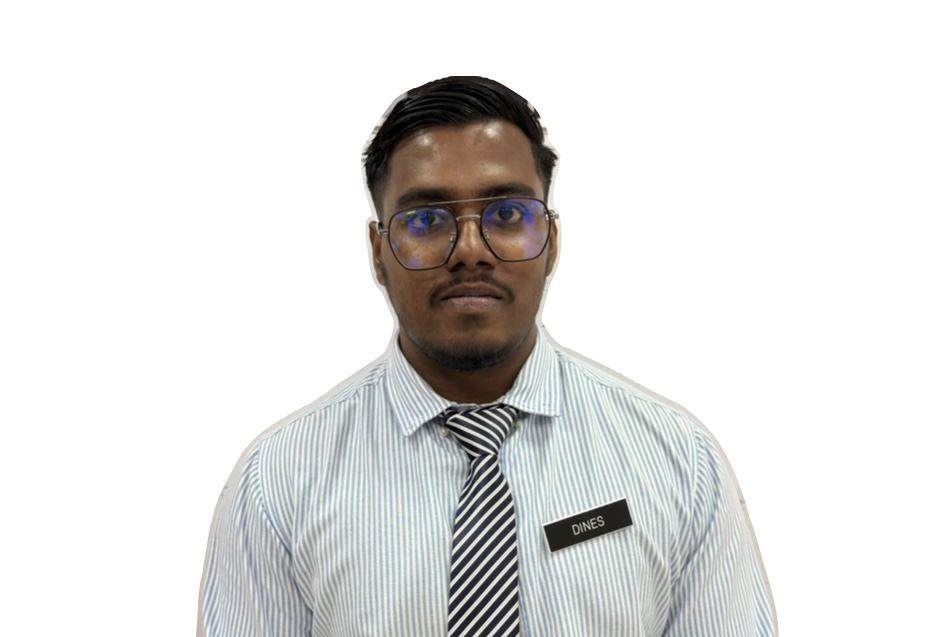

DINES KUMAR SANTRASEGARAN

Summary
Computer Science graduate with hands-on experience in web apps from internships and projects.
Skilled in HTML, CSS, JavaScript, Bootstrap, Node.js, PHP, and MySQL, with knowledge of REST
APIs and Google Apps Script. Eager to grow as a software developer and contribute to building
efficient, user-friendly solutions.
Education
-
Bachelor of Computer Science (Software Development)
Universiti Teknikal Malaysia Melaka
October 2022 - August 2025
CGPA: 3.24
-
Diploma In Information Technology (Digital Technology)
Politeknik Sultan Mizan Zainal Abidin
June 2018 - February 2022
CGPA: 3.62
-
Sijil Pelajaran Malaysia (SPM)
Sekolah Menegah Kebangsaan Taman Putri
January 2013 - December 2017
Work experience
-
Internship at Pejabat Pendidikan Daerah Kulai(PPD Kulai)
March 2025 - August 2025
- Design and develop web form and integrate with Google Site, Google Sheet and Google Drive
- Supported PA system setup and assisted with administrative tasks
- Design and develop web using Canva Code AI with Google Apps Script
Skills
- Programming Languages: HTML, CSS, JavaScript, PHP, SQL
- Frameworks/Libraries: Bootstrap, Node.js
- Database Management: MySQL
- Web Development: REST APIs, Google Apps Script
- Tools: Git, Visual Studio Code, Canva Code AI
- Soft Skills: Problem-solving, teamwork, communication
Awards
- Duke of Edinburgh's Award
Certification
- Apple Teacher
- Google Certified Educator
- Speaker of the Educational Technology Resource Integration Workshop (Canva In Education)
- Certificate of Appreciation SPEED PSMZA
Languages
- English (Fluent)
- Malay (Intermediate)
- Tamil (Native)
Other